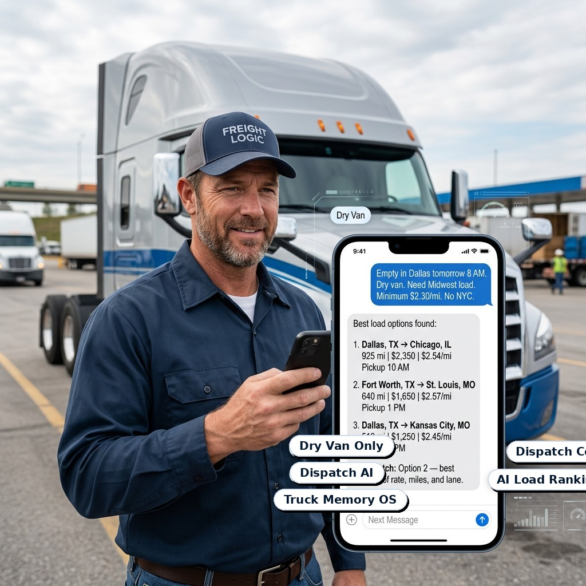

Autonomatex AI for Dry Van Dispatch Companies
Autonomatex is the AI-powered Truck Memory OS that helps dry van dispatch companies rank better load options, reduce dispatcher pressure, and protect company knowledge.
It remembers your senior dispatcher’s experience, truck-by-truck preferences, rejected loads, broker history, lane patterns, booked outcomes, and daily dispatch decisions — then uses that memory with authorized load data to help your team choose the loads worth calling first.
Your dispatcher stays in control.
Autonomatex becomes the AI right hand behind every smarter dispatch decision.

“I found 42 loads. I rejected 39. Here are the 3 worth calling.”
AI-Powered Dispatch Intelligence for Dry Van Teams
Autonomatex AI is built for dry van dispatch companies that want to handle more trucks, protect senior dispatcher knowledge, reduce daily decision pressure, and create a more professional dispatch operation without relying only on memory, calls, and scattered notes.
It acts as an AI-powered Truck Memory OS for your dispatch business. It remembers truck-by-truck preferences, minimum RPM, no-go areas, lane patterns, broker history, rejected loads, booked outcomes, driver needs, and senior dispatcher decisions — then combines that company memory with authorized load data and AI ranking logic to show the loads worth calling first.
Instead of replacing dispatchers, Autonomatex becomes their AI right hand. It helps experienced dispatchers make faster, calmer decisions, helps junior dispatchers learn faster, supports team handoffs, and keeps important dispatch knowledge inside the company even if a dispatcher leaves.
From the first welcome call with a new dry van truck to the first 72-hour dispatch plan, daily load decisions, weekly client communication, and long-term retention, Autonomatex helps your team create a smoother and more professional experience for truck owners and fleet clients.
The result is a hybrid dispatch system for the AI era: your people stay in control, your company memory keeps growing, your dispatch workflow becomes more organized, and every old truck teaches Autonomatex how to serve the next truck better.
Start with a paid pilot, complete the onboarding form, test the workflow, ask questions through email support, and upgrade when ready.
A clear path from pain to paid pilot.
First, the page explains the real dry van dispatch pain. Then it shows how Autonomatex supports the dispatcher, protects the company owner, improves new truck onboarding, makes existing clients more sticky, explains the technical side, and finally shows pricing and paid pilot access.
Dry van dispatch companies lose time, focus, and knowledge when everything lives inside one dispatcher’s head.
Good dispatchers know how to call brokers and book freight. The hard part is deciding which loads deserve attention first, remembering every truck detail, training team members, and protecting years of senior dispatcher experience.
Low RPM, bad deadhead, weak reload markets, risky pickup windows, no-go areas, and loads that look good but fail later.
One experienced dispatcher often carries broker history, lane judgment, driver preferences, and truck-by-truck details alone.
If a senior dispatcher leaves, gets busy, or takes time off, years of decision knowledge can disappear overnight.
Give your dispatcher more time to think, lead, and build relationships.
Autonomatex reduces the burden of remembering every small truck detail manually, so the dispatcher can focus on higher-value work.
Truck preferences, no-go areas, minimum RPM, broker notes, lane history, and past decisions stay organized in one operating memory.
When weak loads are filtered faster, dispatchers can spend more time with drivers, carrier clients, brokers, and internal team members.
Senior dispatchers make stronger decisions when current market data, stored company history, and AI ranking support their judgment.
New team members learn from stored rejection reasons, broker history, lane memory, and outcome logs instead of guessing from scratch.
A cleaner decision workflow helps a dispatch team support more dry van trucks without losing visibility or professionalism.
Less chaos, fewer repeated checks, clearer priorities, and less dependence on scattered notes help create a smoother daily operation.
Autonomatex handles ranking, memory, rejection logic, and decision support. Your dispatch team handles relationships, negotiation, final judgment, and control.
Turn Dry Van Dispatch Knowledge Into Company Intelligence.
Every accepted load, rejected load, broker note, lane pattern, and final outcome can become part of your company’s private dispatch knowledge base.
Your company becomes less dependent on one person’s memory because key dispatch knowledge stays inside the business.
A professional AI-backed workflow gives your company a stronger operational story when handling more dry van trucks or larger carrier clients.
The more your team uses Autonomatex, the more your dry van dispatch memory, rejection logic, and outcome intelligence improve.
The Private AI Brain Behind Your Dry Van Dispatch Operation.
Freight technology is moving fast: AI recommendations, load-matching systems, automation tools, digital freight platforms, and real-time decision software are becoming part of the market.
Autonomatex is built to handle that technology layer for dry van dispatch companies, so your team can stay focused on dispatch operations, driver relationships, carrier-client trust, and business growth.
It becomes a private AI backbone behind your dispatch team: not a replacement, not a generic chatbot, and not a load-board scraper.
Available loads enter the decision layer only through approved API access or customer-authorized sources.
Broker behavior, lane judgment, rejected loads, truck preferences, and real-world decisions become structured company memory.
The system ranks options, explains risk, and brings the right memory forward before the dispatcher wastes calls.
Your dispatcher stays in control and makes sharper decisions with less pressure and more context.
Keep New Dry Van Trucks From Slipping Away.
For many dispatch companies, the hardest part is not only finding loads. It is keeping new dry van trucks long enough to prove value.
New dry van clients often test a dispatch company for a few days. Autonomatex helps your team show structure, memory, and professionalism from day one.
Home base, preferred lanes, no-go areas, minimum RPM, deadhead limits, driver preferences, broker notes, load history, rejected-load reasons, and outcome history are organized in one place.
Autonomatex helps your team build a clear first 72-hour dispatch plan so the new truck does not feel randomly managed.
Your dispatcher does not start from zero every time a new truck comes in. The system brings truck memory, company history, and load-ranking logic forward faster.
If one dispatcher is busy, another team member can understand the truck quickly because the operating memory stays inside Autonomatex.
Autonomatex helps reduce early confusion, repeated mistakes, weak communication, and poor-fit load decisions that make new dry van clients leave too soon.
The result is a more professional experience for truck owners, less pressure on dispatchers, faster team handoff, and stronger long-term business value.
Use Your Existing Dry Van Experience to Retain New Trucks Faster.
Every dry van truck your company works with teaches something: which lanes performed well, which brokers caused problems, which loads looked strong but failed later, which RPM targets protected margin, which driver preferences mattered, and which dispatch decisions created better outcomes.
Autonomatex helps turn that history into a reusable advantage.
Autonomatex combines existing dry van customer history, authorized market/load data, senior dispatcher experience, truck memory, broker notes, lane patterns, rejected-load history, and booked outcomes.
New dry van clients can receive faster truck profile setup, clearer lane and RPM expectations, better first load recommendations, stronger communication, and easier handoff between team members.
Over time, Autonomatex becomes your company’s dry van dispatch intelligence layer — helping your team onboard new trucks faster, retain more serious clients, and build a stronger dispatch business.
From the First Welcome Call, Autonomatex Starts Building the Truck’s Memory.
When a new dry van driver, truck owner, or fleet owner joins your dispatch company, the first few days matter most. That is when trust is built — or lost.
Your dispatcher captures home base, preferred lanes, no-go areas, minimum RPM, deadhead limits, home-time needs, broker restrictions, communication style, and first-week expectations.
Autonomatex turns the welcome-call details into a working truck profile, so the truck’s requirements are organized before load decisions begin.
The system helps create a focused first-week dispatch plan using truck preferences, market/load data, lane memory, and senior dispatcher experience.
Autonomatex ranks the loads worth calling first, explains weak loads, and helps the dispatcher make faster decisions with less pressure.
Your team gets clearer reasons behind each decision, helping dispatchers communicate more professionally with drivers, truck owners, and fleet clients.
Autonomatex keeps building memory around every truck, broker, lane, rejection, and booked outcome. The longer a client stays, the more valuable their dispatch memory becomes.
If one dispatcher is unavailable, another team member can understand the truck faster because the company memory stays inside Autonomatex.
Old clients should feel remembered, understood, and professionally managed.
Every week your dispatch company works with a dry van truck, valuable knowledge is created. Autonomatex helps keep that knowledge organized.
The longer the relationship continues, the stronger the truck memory becomes.
How Autonomatex works behind the scenes.
A simple decision stack for dry van dispatch companies: authorized data, truck memory, AI ranking, and human final control.
Approved DAT API, approved data partner, or customer-authorized load data. No scraping or unauthorized automation.
Stores each truck’s preferences, no-go areas, minimum RPM, driver notes, broker history, and lane patterns.
Weak loads are rejected with reasons before the dispatcher wastes time calling them.
Ranks the top options and explains why each load is worth calling or avoiding.
The dispatcher calls, negotiates, books manually, and logs the outcome. Autonomatex updates memory.
Decision support only. Dispatchers stay in control.
Built for approved DAT API, approved data partner access, or customer-authorized load data. No scraping.
Autonomatex ranks and explains. Your dispatch team calls, negotiates, and books manually.
Each recommendation can store input, score, reason, human decision, and final outcome.
Paid pilot users submit questions by email/form so serious customers receive focused support without long calls.
No live call required. See the dry van workflow yourself.
The workflow preview uses sample data to show how Autonomatex ranks loads, rejects weak options, and updates company memory. Paid pilot access is separate and begins after account activation.
Call Dallas → Chicago first. It clears the minimum RPM, matches Midwest preference, avoids no-go areas, and has stronger reload potential.
Company-owned Truck Memory OS for dry van dispatch.
Autonomatex becomes more valuable because it learns what each dry van truck accepts, rejects, wins, loses, and repeats. The operating memory compounds inside the dispatch company.
Start paid pilot access →Start small, then scale the dry van dispatch brain.
Pricing is designed to show value per truck while keeping the serious B2B dispatch-company path clear.
Paid Pilot Access
$79
7 days after account activation · up to 2 dry van trucks · email support only · credit toward first month if you upgrade.
Start Pilot1 Truck Access
$99/mo
For a dispatcher testing one active dry van truck before expanding.
Choose 1 Truck4 Truck Team
$199/mo
For a small dry van dispatch team that wants to compare value across several trucks.
Choose 4 TrucksCore Dispatch
$299/mo
Up to 10 dry van trucks. Truck memory, load ranking, rejection reasons, broker/lane notes, and outcomes.
Choose CoreGrowth Dispatch
$749/mo
Up to 30 dry van trucks. Better for growing dry van dispatch teams with multiple users.
Choose GrowthPro Dispatch
$1,499/mo
Up to 75 dry van trucks. For high-volume dry van dispatch operations.
Choose ProExtra trucks after plan limit: $29/truck/month. Approved load-data/API costs may be billed separately when applicable.
Start paid pilot access.
Use this path if you want to test Autonomatex without a live sales call. Pay first, complete the onboarding form, then use email support for questions.
- 7-day paid pilot begins after account activation.
- Questions are handled by email/form for paid users.
- No auto-booking. Dispatcher remains in control.
- Dry van dispatch companies only.
Start with paid pilot access. Ask questions by email/form.
Autonomatex is built for a no-call buying flow. First, choose paid pilot access or a monthly plan, complete the onboarding form, and submit your questions through the website form or email support path. This keeps support focused on serious dry van dispatch companies instead of long unpaid calls.
Use the paid pilot path to show serious interest before support begins.
Share your dry van truck count, current load source, dispatch pain, and first workflow needs.
Questions are answered through email/form support for paid pilot users, without requiring a live call or laptop demo.
Questions dry van dispatch companies may ask before paying.
Do I need to book a live call?
No. The website includes a self-guided workflow preview. Paid users can submit questions by email/form.
How do I contact Autonomatex?
Use the paid pilot form or onboarding form. Autonomatex is designed for email/form support first, so serious paid users can get focused answers without long live calls.
Is this only for dry van dispatch companies?
Yes. The first public version is focused only on dry van dispatch companies and dry van dispatch workflows.
When does the paid pilot start?
The 7-day paid pilot starts after account activation, not immediately after submitting the form.
Does Autonomatex book loads?
No. Autonomatex ranks and explains. The dispatcher calls, negotiates, books manually, and logs outcomes.
Is DAT connected?
The platform is designed for approved DAT API or customer-authorized data sources. The workflow preview uses sample data until an approved connection is active.
What happens after the pilot?
Upgrade to the monthly plan that matches your dry van truck count. Pilot payment can be credited toward the first month.
Ready to test Autonomatex without a sales call?
Start paid pilot access, complete onboarding, and use email support for questions.
Start 7-Day Paid Pilot